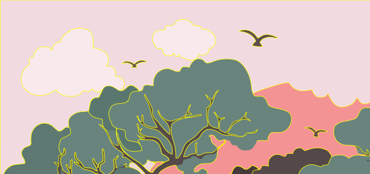

Vision Cortex - Semantic Computer Vision
The goal of Semantic Computer Vision is to allow computers to understand the content of images and graphics as intended and perceived by humans, and construct a high level representation of such information.
This technology can be embodied in different applications:
Symbolic Barcode
We developed SymCode, a 2D barcode designed to be both human-readable and machine-readable.
Image Simplification
We developed Impression, a family of algorithms for image simplification and segmentation. It allows us to control the amount of visual information in an image in a quantitative manner.
Image Vectorization
We developed VTracer, a utility to convert raster images (like jpg & png) into vector graphics (svg). Our graphics pipeline is able to process high resolution scans and photographs and trace the content to output compact vector files.
Optical Character Recognition
We are developing a new Optical Character Recognition (OCR) engine from the ground up specifically for pictorial languages like Chinese, Korean and Japanese (CKJ) to encompass wider character sets and font variations.